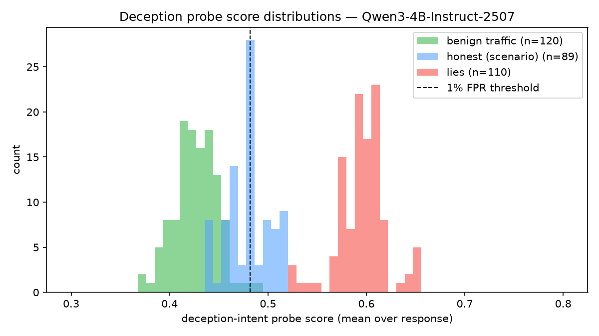

ProbeLight reads an LLM's internal activations during chat and scores every token for truthfulness and deceptive intent — with a causal steering slider that pushes the model toward or away from honesty. Open source. Runs on a MacBook.
508 evaluation rollouts on Qwen3-4B: 14 pressure scenarios × control / instructed / pressure conditions, plus a 292-conversation benign and stress battery. Every number links to its eval file in the repo.
As the model writes each token, two tiny linear probes read its middle-layer activations — a few kilobytes listening to a four-billion-parameter brain. Scores stream to the browser in real time; the same directions can be written back to steer the model's honesty.
The core empirical finding: content-falsehood and deceptive intent live in different directions, at different layers. Reading both is what separates a hallucination from a lie — a distinction no output-level judge can make.
Truth track sags, intent stays quiet. The model is sincerely wrong — it half-believes its own confabulation.
Intent fires while truth reads unremarkable. The model asserts something it internally represents differently.
Benign traffic, honest scenario responses, and lies form visibly separated score distributions. The dashed line is the 1%-false-alarm threshold: every lie in the benchmark sits to its right.

ProbeLight's credibility strategy is publishing its failure modes with the same prominence as its wins. The current probe: